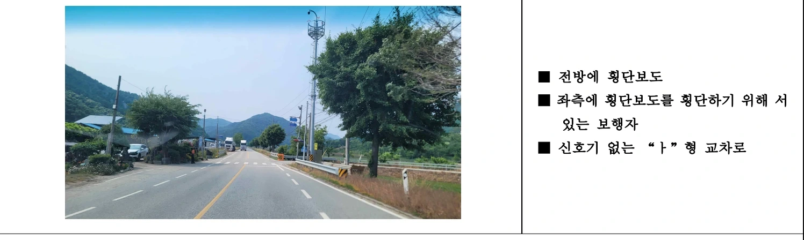

723. Hai cách lái xe nào là an toàn nhất trong tình huống sau?

- ①Liên tục nhấn còi để cảnh báo người đi bộ đang đứng bên trái đường và đi nhanh qua.
- ②Cứ thế đi qua mà không cần dự đoán trước tình huống nguy hiểm.
- ③Lái xe chậm đề phòng trường hợp có xe tiến vào từ đường phía trước bên phải.
- ④Vì là đường giao nhau không có đèn tín hiệu giao thông nên tăng tốc và nhanh chóng đi qua.
- ⑤Tạm dừng ở vạch dừng trước vạch sang đường dành cho người đi bộ.
Xem đáp án
Đáp án
③ Lái xe chậm đề phòng trường hợp có xe tiến vào từ đường phía trước bên phải.
⑤ Tạm dừng ở vạch dừng trước vạch sang đường dành cho người đi bộ.
Căn cứ
Tránh bấm còi liên tục mà không có lý do chính đáng, khi đi vào ngã tư không có tín hiệu giao thông phải lái xe chậm và chú ý xung quanh. Khi người đi bộ đang vượt hoặc chuẩn bị băng qua đường dành cho người đi bộ thì phải tạm thời dừng lại trước phần đường dành cho người đi bộ qua đường (tham khảo vạch dừng có lắp đặt vạch dừng) để không cản trở việc người đi bộ qua đường hoặc gây nguy hiểm.
Phần căn cứ là bản dịch máy để tham khảo.